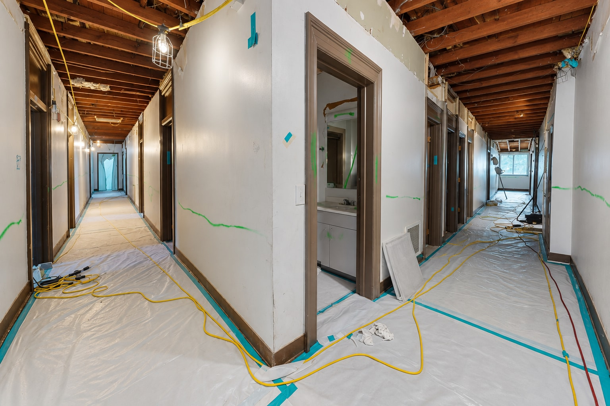

NorthStar brings hazardous-material abatement into renovation, demolition and facility renewal plans that account for the surrounding environment.

Selective work / Protected interiors
A different scope. A different work environment.
Material identification, containment, access and clearance requirements define abatement work and the handoff to the next trade. Each needs its place in the project plan.
Start with the available surveys and the intended use of the space. Coordinate the abatement scope with occupants, facilities teams, environmental consultants and the construction schedule.
Address identified materials
Scope asbestos, lead, mold and other hazardous or universal waste work against the site’s documented conditions.
Plan the work environment
Coordinate work zones, containment needs, access and adjacent-use constraints for the specific engagement.
Connect the trades
Align abatement with selective demolition, renovation or decommissioning activities.
Define the handoff
Establish documentation, testing responsibilities and completion requirements before the next phase begins.
Share material surveys, test results and building-use requirements.
Map occupied areas, access routes and construction interfaces.
Agree on clearance responsibilities and the next-trade handoff.
 NorthStarWe Bring Answers.
NorthStarWe Bring Answers.